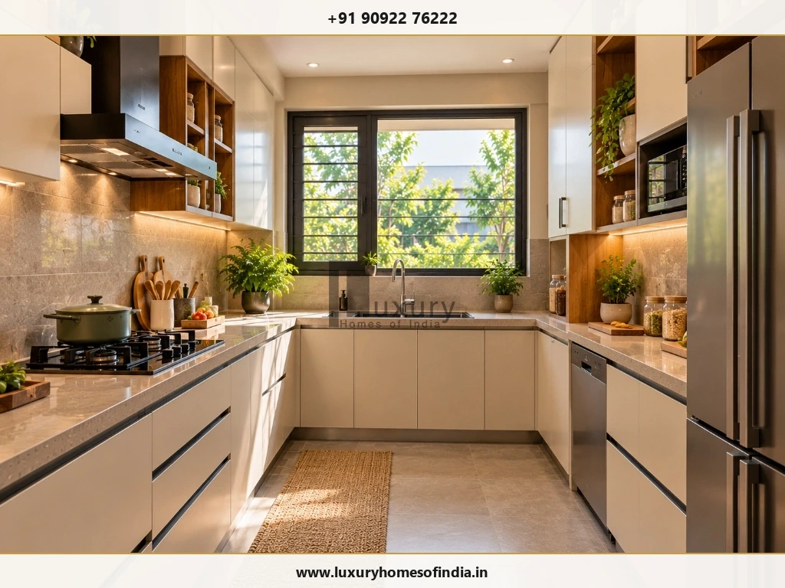
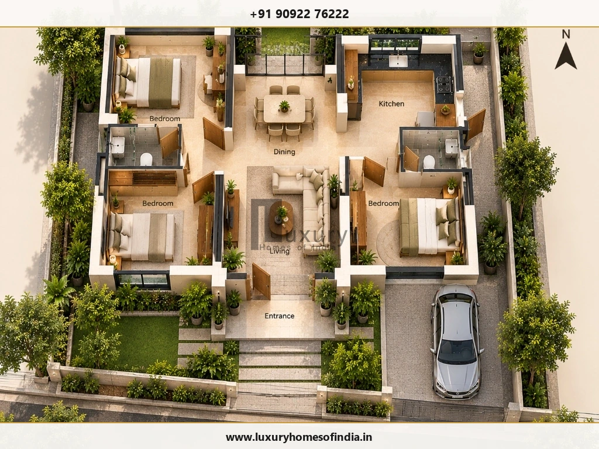
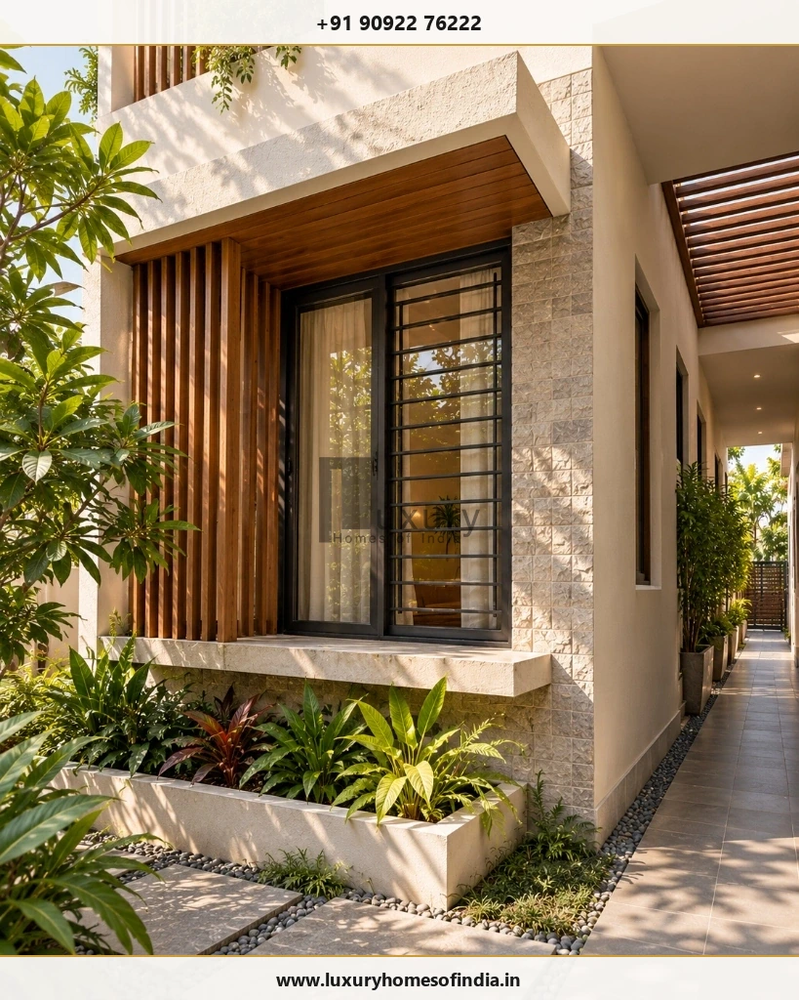

Executive Summary for Homeowners
Vastu for the main door, kitchen and bedroom is an important consideration for many Indian families planning a new home. Common traditional preferences include north- or east-facing entrance positions, a south-east kitchen and a south-west master bedroom. However, the best layout for an individual house depends on more than room direction. Plot dimensions, road access, daylight, ventilation, privacy, structural design and local building regulations all influence what is feasible.
The most useful approach is to identify the family's Vastu preferences early, assess them on the measured site plan and ask the architect to compare practical layout alternatives before the design is finalised. This guide explains commonly followed Vastu principles, how they can be balanced with everyday functionality, and what homeowners planning in Chennai should consider before construction begins. Vastu is a traditional belief system; its directional recommendations should not be treated as scientifically proven guarantees of health, prosperity or success.

What Is Vastu for the Main Door, Kitchen and Bedroom?
Vastu Shastra is a traditional Indian system of spatial planning that considers building orientation, room placement and relationships between different areas of a home. Families may use its principles to guide the main entrance, cooking area, bedrooms and pooja space.
Three areas frequently discussed during residential planning are:
- Main door: The entrance location, approach, threshold elevation, and relationship with the living area and car porch.
- Kitchen: The room's directional zone, cooking-platform arrangement, sink water points, pantry storage, and exhaust ventilation.
- Bedrooms: Their location, privacy from public areas, furniture layout, wardrobe positions, daylight, and acoustic comfort.
Coordination Principle
Vastu traditions differ in how they interpret directional zones and preferred positions. Before planning begins, agree on the principles the family wishes to follow rather than combining conflicting recommendations from different sources. A useful architectural plan should make these preferences visible on the drawing while also addressing the site's actual dimensions and technical requirements.
1. Main Door Vastu: Which Direction Is Preferred?
North- and east-facing entrances are commonly preferred in many Vastu interpretations. The exact position on the entrance wall, however, depends on the tradition followed and the orientation of the property.
Some methods divide a wall into smaller directional segments, often called padas. A general direction chart cannot determine the preferred segment for every house without reference to a verified site boundary survey.
| House Orientation | Traditional Consideration | Architectural Consideration |
|---|---|---|
| East-facing | Entrance position depends on the chosen Vastu method (often 3rd or 4th pada). | Assess morning light, entry privacy from the street, and porch design. |
| North-facing | Confirm the preferred segment on the measured plan (Mukhya or Bhallat pada). | Coordinate access with parking, front foyer, and living room circulation. |
| West-facing | Assess the selected segment according to the chosen tradition (Pushpadanta pada). | Consider harsh afternoon sun, monsoon rain exposure, and deep verandah shading. |
| South-facing | Evaluate the entrance using the chosen Vastu method (Vithatha pada). | Plan the approach, compound gate, shaded porch, and internal circulation buffer. |
No single direction automatically determines whether a house is well designed. The complete layout, the site constraints and the family's priorities must be considered together.
Practical Main Door Planning Checklist
- Verify the site's boundaries and recorded magnetic north direction with a calibrated compass.
- Mark the road side and compound-gate location clearly on the site plan.
- Decide the entrance position before finalising the internal partition layout.
- Maintain a clear and convenient route from the entrance to the living area.
- Check that the door swing does not obstruct interior circulation or clash with adjacent doors.
- Provide suitable architectural lighting, weather protection canopy, and step drainage.
- Consider privacy from neighbouring properties and oncoming street viewpoints.
For a Chennai home, assess actual rain exposure during northeast monsoons, surrounding buildings, and the orientation of the entrance before selecting shading overhangs or weather-protection details.
2. Kitchen Vastu: Which Direction Is Commonly Preferred?
The south-east is commonly recommended for the kitchen in traditional Vastu interpretations (associated with the element of Agni), while the north-west is often considered an alternative. Some traditions also recommend arranging the cooking platform so the cook faces east.
These are traditional preferences rather than universal architectural requirements. The final layout must also provide suitable work surfaces, appliance clearances, storage, ventilation and access to plumbing and electrical services.

| Kitchen Element | Common Traditional Preference | Practical Planning Requirement |
|---|---|---|
| Kitchen location | South-east (Agneya zone) | Test whether the room fits within the feasible building footprint and service stack. |
| Alternative location | North-west (Vayavya zone) | Compare it with the rest of the floor plan, utility area, and exterior walls. |
| Cooking platform | Facing east is commonly recommended | Confirm comfortable working space, hob clearance from flammable tall units, and safe appliance placement. |
| Sink & water points | North-east corner of the kitchen counter | Coordinate plumbing drains, under-sink RO units, and workable counter separation from the gas hob. |
| Ventilation | Window on eastern or exterior wall | Design effective high-CFM exhaust chimney ducting to the exterior and openable cross-ventilation. |
| Storage & tall units | South or west walls | Keep frequently used items accessible, pantry pull-outs ergonomic, and floor circulation clear. |
Kitchen Planning Mistakes to Avoid
- Choosing a location that makes exterior chimney ducting and natural ventilation difficult.
- Reducing usable counter prep space just to force a theoretical cooking orientation.
- Finalising plumbing drainage and high-load 16A electrical points too late in construction.
- Ignoring built-in appliance clearances (refrigerator heat dissipation, dishwasher door opening).
- Creating an inconvenient, long walking route between the kitchen and dining room.
A successful kitchen layout should make daily culinary tasks comfortable and safe while accommodating the family's chosen Vastu preferences wherever practical.
3. Bedroom Vastu: Where Should Each Bedroom Be Located?
Traditional Vastu guidance commonly favours the south-west for the master bedroom. Children's bedrooms are often considered for the west or north-west, while a guest bedroom may be placed in the north-west or another suitable zone.
These are general preferences, not fixed rules that can replace a site-specific floor plan. Household size, privacy, room dimensions, window positions and access to bathrooms all influence the final arrangement.
| Bedroom Type | Common Vastu Preference | Practical Design Priority |
|---|---|---|
| Master bedroom | South-west (Nairutya) | Acoustic privacy, comfortable king-bed dimensions, wardrobe storage, and attached bath. |
| Children's bedroom | West or north-west | Daylight, ventilation, dedicated study desk space, and book storage. |
| Guest bedroom | North-west or another suitable zone | Convenient access to common spaces, guest privacy, and flexible multi-use potential. |
| Additional bedroom | Based on feasible layout | Clear walking clearances around beds, natural breeze, and storage cupboards. |
Master Bedroom Vastu Considerations
The south-west is a common traditional preference for the master bedroom. During planning, ensure you evaluate:
- Bed and wardrobe arrangement: Ensuring a minimum 3-foot walking corridor around the bed and unobstructed wardrobe door swings.
- Privacy zoning: Buffering bedroom doors from immediate sightlines of the main entrance foyer and living room.
- Window placement: Providing cross-ventilation while avoiding direct solar heat radiation on the bed headboard.
- Bathroom access: Seamless en-suite transition without placing the toilet doorway directly opposite the bed.
- Heat exposure management: In Chennai, south-west exterior walls absorb heavy afternoon solar heat; cavity walls or exterior louvers prevent night heat radiation.
Some Vastu traditions recommend sleeping with the head towards the south or east. These preferences should be viewed within comfortable interior planning. Room temperature, acoustic insulation, natural ventilation, and ergonomic mattress support remain fundamental to restful sleep.
4. How to Coordinate the Main Door, Kitchen and Bedrooms
The entrance, kitchen and bedrooms should be planned as one connected, functional system rather than as separate, isolated directional targets.
Follow this architectural sequence when comparing layout options:
Establish Fixed Site Conditions
Record plot boundaries, road side, access width, site drainage levels, setback lines, and surrounding building heights.
Mark Preferred Vastu Zones
Identify the entrance quadrant, south-east kitchen, and south-west master bedroom zones the family prioritises.
Test Functional Room Dimensions
Check whether each proposed room accommodates standard furniture, king beds, wardrobes, and walking clearance comfortably.
Review Everyday Movement & Privacy
Ensure the entrance connects logically to the foyer and living hall without exposing private bedroom quarters to visitors.
Coordinate Services and Structural Grids
Verify plumbing drop shafts, electrical conduit runs, structural column alignments, and staircase headroom early.
Compare Documented Alternatives
Where a traditional preference conflicts with structural safety or municipal bylaws, evaluate documented design compromises.

Example of a Conceptual Arrangement
On a suitable rectangular plot, an architect might explore a south-east kitchen, a south-west master bedroom and a pooja space in the north-east if those positions align with the family's chosen Vastu approach. The entrance, living area, additional bedrooms, bathrooms and staircase would then be arranged around the actual site constraints and permitted building footprint.
This is a conceptual example, not a universal floor plan or a representation of an approved LHI project. Road access, plot dimensions, building regulations and household requirements can change the best arrangement.
5. Vastu Planning for Small and Large Plots
The available plot area affects how much flexibility a design has. Plot dimensions alone do not establish the permitted ground coverage, built-up area or number of rooms.
Critical Planning Rule
Plot area and permitted built-up area are fundamentally different. Confirm the applicable development rules, road width setbacks, and municipal approval requirements before selecting or finalising a floor plan.
6. Balancing Vastu with Daylight and Ventilation in Chennai
A house in Chennai should respond to its actual orientation, surrounding buildings and local tropical coastal conditions. Directional preferences do not, by themselves, ensure comfortable indoor living conditions.
Essential environmental design checks include:
- Solar orientation & window sizing: Size windows according to exposure; avoid massive unshaded glazing on western and southern facades.
- Passive architectural shading: Incorporate vertical louvers, overhang projections, and weather canopies to block direct sun while capturing breezes.
- Kitchen and wet-area exhaust: Direct high-capacity exhaust ducting to exterior shafts to prevent heat and moisture build-up inside living areas.
- Furniture and wardrobe airflow: Avoid placing floor-to-ceiling wardrobes over operable window openings or blocking natural air paths.
- Roof thermal insulation: Apply reflective cool-roof tiles or terrace gardens over top-floor bedrooms to reduce radiant heat transfer.
- Monsoon rain protection: Design weather-sealed entrance thresholds and porch drainage to handle Chennai's heavy monsoon downpours.
- Neighbourhood privacy: Review window and balcony sightlines where adjacent multi-storey apartments overlook private areas.

The aim is to find a workable balance between traditional preferences and environmental design. A room that occupies a preferred directional zone can still be uncomfortable if it lacks suitable ventilation or receives excessive afternoon heat.
7. How to Apply Vastu Before Construction Begins
Concept design is generally the most useful stage to explore Vastu preferences, before detailed structural models and services drawings are finalised.
Step 1: Verify the Plot Measurements
Confirm the boundaries, dimensions, road access width, site levels relative to street drains, and true magnetic north with an on-site survey.
Step 2: List the Family's Priorities
Record preferred entrance positions, kitchen location, bedroom count, pooja space, vehicle parking, storage, and future vertical expansion plans.
Step 3: Establish the Project Budget
Base your initial budget on total built-up area, structural specifications, architectural finishes, statutory approvals, and contingency allowances.
Step 4: Prepare Alternative Concept Plans
Ask the architect to test the main door, kitchen and bedroom positions against site dimensions and selected Vastu preferences to evaluate trade-offs.
Step 5: Coordinate Technical Requirements
Review the structural column grid, electrical conduits, plumbing shafts, drainage slopes, waterproofing, and ventilation before breaking ground.
Step 6: Check Applicable Regulations
Confirm the relevant approval route and planning parameters with the Greater Chennai Corporation or CMDA through a registered architect or engineer.
Statutory Planning Resources for Chennai Homeowners
Ensure your residential building plan conforms with municipal building bylaws:
- Online Planning Applications: Greater Chennai Corporation Town Planning Portal
- Municipal Bylaws & Guidelines: GCC Town Planning Department Official Site
- Master Plan & Approvals: Chennai Metropolitan Development Authority (CMDA)
Vastu preferences do not replace statutory planning permission, building permits or structural engineering requirements.
8. Common Vastu Planning Mistakes to Avoid
- Choosing the entrance without checking true orientation: Confirm the measured site survey and the specific Vastu method being followed.
- Using a generic room-direction chart as a complete plan: Evaluate the whole spatial layout against the actual site boundaries and setbacks.
- Making the kitchen too small: Preserve adequate prep counter length, ventilation shafts, and appliance clearances.
- Sacrificing bedroom comfort: Ensure proper room dimensions, privacy, furniture clearances, and window breeze paths.
- Ignoring circulation: Plan smooth, logical connections between entrance, living areas, kitchen, dining, and private bedrooms.
- Changing structural elements late: Have any proposed changes to columns, beams, walls or stairs reviewed by a licensed structural engineer.
- Overlooking building services: Coordinate plumbing lines, electrical panels, drainage pipes, and ventilation ducting early.
- Treating Vastu as a substitute for approval: Comply fully with GCC/CMDA building bylaws and municipal sanctions.
Frequently Asked Questions
Plan Your Dream Home with Luxury Homes of India
The main door, kitchen and bedrooms shape how your home functions every day. Discuss your Vastu preferences and design brief with LHI's architectural and luxury construction team in Chennai.
Schedule Floor Plan Consultation